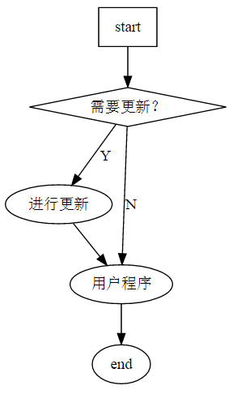
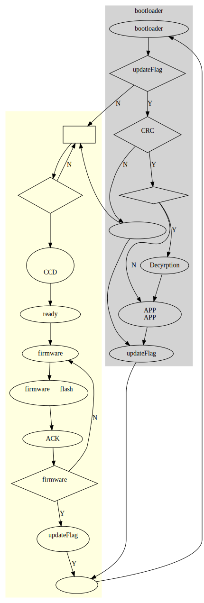

IAP notes
更新日期:
IAP是什么
IAP = In application programming，即在应用中编程，用于产品软件升级。要实现IAP，需要两个程序，一个称为bootloader程序，一个称为应用程序(APP)，开始升级时，bootloader程序负责将APP加载到flash中。
bootloader程序的一般流程如下：

注意点
- bootloader程序和APP程序需要放在不同的user flash区域，在keil中可直接通过设置选项设置。
- bootloader程序一般放在起始位置为0x8000000处，因为一般情况下程序是从这里开始启动的。
- 和操作系统类似，需要注意中断向量表所指向的位置。可参考《stm32f4开发指南》 757页，也可参考以前写的STM32向量表详细分析。
- 从第三点可以看出，bootloader中最好不要使用中断，否则程序会比较复杂。
整个程序的流程

下面是GraphViz的源码，方便以后修改1
2
3
4
5
6
7
8
9
10
11
12
13
14
15
16
17
18
19
20
21
22
23
24
25
26
27
28
29
30
31
32
33
34
35
36
37
38
39
40
41
42
43
44
45
46
47
48
49
50
51
52
53
54digraph G {
center=true
start [label="用户程序",shape=box]
getUpdateCmd [shape = diamond,label="接收到\n更新命令"]
stopLidar [label="停转雷达\n停止激光\n停止CCD"]
sendReadySignal[label="发送ready信号"]
getFirmwareData[label="接收firmware"]
writeFirmware[label="firmware写入flash\n空闲区"]
sendRecievedSignal [label="发送ACK信号"]
IsFirmwareComplete [shape= diamond,label="firmware接收\n完毕？"]
rebootSystem [label="重启系统"]
setUpdateFlag[label="updateFlag\n置位"]
enterBootloader[label="进入bootloader程序"]
checkUpdateFlag[shape=diamond,label="updateFlag\n是否置位？"]
flashApp[label="将APP内容烧\n录到APP区"]
isEncryption[shape=diamond,label="是否加密？"]
crc[label="CRC校验\n是否成功",shape=diamond]
sendCrcFailSignal[label="报告校验失败"]
ResetUpdateFlag[label="复位updateFlag"]
subgraph cluster0{
label="用户程序"
color=lightyellow;
style=filled
start->getUpdateCmd
getUpdateCmd->start[label="N"]
getUpdateCmd->stopLidar->sendReadySignal->getFirmwareData->writeFirmware
->sendRecievedSignal->IsFirmwareComplete
IsFirmwareComplete->getFirmwareData[label="N"]
IsFirmwareComplete->setUpdateFlag->rebootSystem[label="Y"]
}
subgraph cluster1{
label="bootloader程序"
style=filled
color=lightgray
rebootSystem->enterBootloader->checkUpdateFlag
checkUpdateFlag->start[label="N"]
checkUpdateFlag->crc[label="Y"]
crc->isEncryption[label="Y"]
crc->sendCrcFailSignal[label="N"]
sendCrcFailSignal->start
isEncryption->Decyrption[label="Y"]
isEncryption->flashApp[label="N"]
Decyrption->flashApp
flashApp->ResetUpdateFlag
sendCrcFailSignal->ResetUpdateFlag->rebootSystem
}
}
可以看出，整个bootloader部分的程序会比较简单，只需做CRC和解密，然后读flash，写flash。
注意这种方法对本身占用flash比较大的APP不适用。